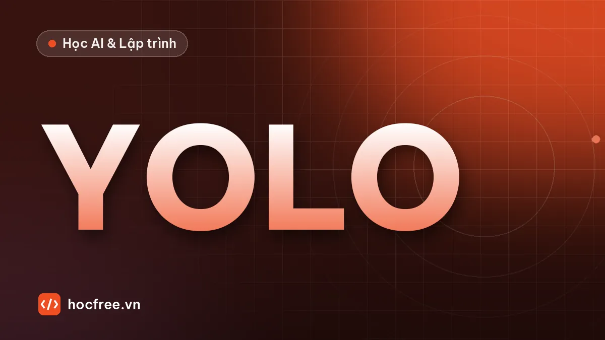

Object Detection với YOLO26: chuẩn bị dữ liệu, huấn luyện và xuất mô hình
Nhãn YOLO, script kiểm tra nhãn, data.yaml, huấn luyện và kiểm tra YOLO26 bằng Ultralytics, từ hộp bao đến quyết định OK/NG, letterbox và xuất ONNX.

Học xong bài này, bạn sẽ
- Chuẩn bị dữ liệu định dạng YOLO
- Huấn luyện, kiểm tra, dự đoán
- Xuất mô hình
Nên học trước: Bài tập chặng 11: thiết kế chiến lược AI cho một bài toán lỗi
Nội dung bài viết
- 1. Object Detection và họ YOLO
- 2. Định dạng nhãn YOLO
- 3. Tạo dataset mẫu và cấu trúc thư mục
- 4. Kiểm tra nhãn trước khi huấn luyện
- 5. Huấn luyện
- 6. Kiểm tra và dự đoán
- 7. Từ hộp bao đến quyết định OK/NG
- 8. Xuất mô hình để triển khai
- 9. Bài thực hành: YOLO26n trên dữ liệu của bạn
- 10. Sai lầm thường gặp
- 11. Bài tập
- Tóm tắt
Ở chặng 10 bạn đã huấn luyện mô hình phân loại ảnh OK/NG: cả ảnh nhận một nhãn. Nhiều trạm kiểm tra cần nhiều hơn thế: khay phải có đủ 4 con vít và 2 đai ốc, mỗi vết lỗi phải được khoanh vị trí để người vận hành nhìn thấy, robot cần tọa độ từng vật để gắp. Đó là bài toán Object Detection (phát hiện đối tượng): mô hình trả về danh sách hộp bao, mỗi hộp có lớp và điểm tin cậy. Bài này là bài mở đầu chặng 12, nối tiếp "Bài tập chặng 11: thiết kế chiến lược AI cho một bài toán lỗi": bạn sẽ chuẩn bị dữ liệu đúng định dạng YOLO (phần mà phần lớn lỗi dự án nằm ở đó), viết script kiểm tra nhãn, sinh file cấu hình dataset, huấn luyện, kiểm tra, dự đoán và xuất mô hình YOLO26 bằng thư viện Ultralytics, rồi biến kết quả dự đoán thành quyết định OK/NG gửi PLC. Bài sau, "IoU, mAP: đánh giá Object Detection", giải thích kỹ các con số mà bước huấn luyện in ra.
class cx cy w h; tạo cấu trúc thư mục dataset và file data.yaml; viết script phát hiện nhãn sai trước khi huấn luyện; biết các tham số huấn luyện quan trọng của Ultralytics và đọc kết quả trong runs/detect/; chạy dự đoán, kiểm tra (val) và xuất ONNX; viết phần hậu xử lý đếm vật, ra quyết định OK/NG; tự làm được bài thực hành: huấn luyện YOLO26n trên ít nhất 100 ảnh của bạn và báo cáo mAP50.1. Object Detection và họ YOLO
Một mô hình phát hiện đối tượng nhận một ảnh và trả về danh sách (x1, y1, x2, y2, điểm tin cậy, lớp). So với các bài toán bạn đã gặp:
| Bài toán | Đầu ra | Ví dụ trong nhà máy | Công gán nhãn |
|---|---|---|---|
| Phân loại (chặng 10) | Một nhãn cho cả ảnh | Ảnh nắp chai OK hay NG | Thấp: 1 nhãn/ảnh |
| Phát hiện đối tượng | Hộp bao + lớp + điểm tin cậy | Đếm vít trên khay, khoanh vị trí vết móp, định vị vật cho robot | Trung bình: kéo hộp quanh từng vật |
| Phân đoạn (bài 3–5 của chặng) | Mặt nạ từng pixel | Đo diện tích vết loang, chiều dài vết xước | Cao: vẽ đa giác |
YOLO (You Only Look Once) là họ mô hình phát hiện một giai đoạn: một lần chạy mạng cho ra tất cả hộp, đủ nhanh để chạy thời gian thực. Thư viện Ultralytics (Python) gói gọn toàn bộ quy trình huấn luyện, kiểm tra, dự đoán và xuất mô hình cho nhiều thế hệ YOLO; YOLO26 là thế hệ mới của Ultralytics, được Ultralytics giới thiệu từ cuối năm 2025 (xem trang tài liệu chính thức docs.ultralytics.com để biết phiên bản mới nhất). Theo các tài liệu mô tả kiến trúc, các điểm đáng chú ý với kỹ sư triển khai:
- End-to-end, không cần NMS: các đời trước trả về rất nhiều hộp chồng lên nhau và cần bước hậu xử lý NMS (Non-Maximum Suppression, giữ hộp điểm cao nhất, bỏ các hộp trùng) mà bạn sẽ tự cài ở bài sau. YOLO26 trả thẳng danh sách hộp cuối cùng, nên code triển khai (C#, C++, thiết bị biên) đơn giản hơn.
- Bỏ DFL (Distribution Focal Loss) ở đầu ra hộp, giúp xuất sang ONNX, TensorRT, OpenVINO gọn và tương thích hơn.
- Công thức huấn luyện mới (bộ tối ưu MuSGD, các hàm mất mát ProgLoss và STAL nhắm tới vật nhỏ) và tối ưu cho suy luận trên CPU.
- Năm cỡ
n,s,m,l,x(nano đến extra-large), và các biến thể cho phân đoạn (-seg, dùng ở bài "Phân đoạn vết lỗi với YOLO26-seg") cùng các tác vụ khác.
Cài đặt trên máy của bạn (khuyến nghị môi trường ảo riêng; có GPU NVIDIA thì cài PyTorch bản CUDA trước theo hướng dẫn của pytorch.org):
pip install ultralyticsChạy thử mô hình đã huấn luyện sẵn trên bộ COCO (80 lớp đồ vật thông dụng). Lần đầu chạy, thư viện tự tải file trọng số yolo26n.pt:
# (minh họa) cần ultralytics và tải trọng số từ Internet
from ultralytics import YOLO
model = YOLO("yolo26n.pt") # trọng số COCO
results = model.predict("anh_test.jpg", conf=0.25, imgsz=640)
r = results[0] # một ảnh → một đối tượng Results
for (x1, y1, x2, y2), c, k in zip(r.boxes.xyxy.tolist(), r.boxes.conf.tolist(), r.boxes.cls.tolist()):
print(f"{model.names[int(k)]:10s} {c:.2f} ({x1:.0f}, {y1:.0f}) - ({x2:.0f}, {y2:.0f})")
r.save("ket_qua.jpg") # ảnh có vẽ hộpMô hình COCO biết "người", "chai", "cốc" nhưng không biết "vít M3" hay "vết móp". Phần còn lại của bài là dạy nó lớp của bạn bằng transfer learning: bắt đầu từ trọng số COCO, huấn luyện tiếp trên dữ liệu riêng, giống ý tưởng bạn đã làm với mô hình phân loại ở chặng 10.
2. Định dạng nhãn YOLO
Mỗi ảnh có một file .txt cùng tên. Mỗi dòng là một vật:
<class_id> <cx> <cy> <w> <h>class_id: số nguyên bắt đầu từ 0, khớp với danh sáchnamestrongdata.yaml.cx, cy: tâm hộp;w, h: rộng, cao của hộp. Cả bốn số được chuẩn hóa về 0–1: chia tọa độ x, rộng cho chiều rộng ảnh, tọa độ y, cao cho chiều cao ảnh.- Ảnh không có vật nào (ảnh nền, ảnh OK): file
.txtrỗng. Ảnh nền rất quan trọng để mô hình học "không có gì thì không báo".
Nhờ chuẩn hóa, nhãn không phụ thuộc độ phân giải: thư viện co ảnh về imgsz khi huấn luyện mà không phải sửa nhãn. Hai hàm đổi qua lại:
def xyxy_sang_yolo(x1, y1, x2, y2, W, H):
"""Hộp pixel (góc trên trái, góc dưới phải) → (cx, cy, w, h) chuẩn hóa 0–1."""
return ((x1 + x2) / 2 / W, (y1 + y2) / 2 / H, (x2 - x1) / W, (y2 - y1) / H)
def yolo_sang_xyxy(cx, cy, w, h, W, H):
"""Ngược lại: nhãn YOLO → hộp pixel."""
return ((cx - w / 2) * W, (cy - h / 2) * H, (cx + w / 2) * W, (cy + h / 2) * H)
W, H = 1280, 1024 # ảnh camera 1,3 MP
hop = (400, 300, 560, 420) # vít: x1, y1, x2, y2 theo pixel
nhan = xyxy_sang_yolo(*hop, W, H)
dong = "0 " + " ".join(f"{v:.6f}" for v in nhan)
print("dòng nhãn :", dong)
print("đổi ngược :", [round(v, 2) for v in yolo_sang_xyxy(*map(float, dong.split()[1:]), W, H)])dòng nhãn : 0 0.375000 0.351562 0.125000 0.117188
đổi ngược : [400.0, 300.0, 560.0, 420.0]Ghi 6 chữ số thập phân là đủ: sai số làm tròn nhỏ hơn 0,001 pixel. Các công cụ gán nhãn như CVAT, Label Studio (bài "Công cụ gán nhãn miễn phí" ở chặng 11) xuất thẳng định dạng này; tuy vậy bạn vẫn nên hiểu và tự kiểm tra, vì lỗi nhãn là nguyên nhân số một khiến mô hình kém.
cx, cy, w, h chuẩn hóa. Pascal VOC: x1, y1, x2, y2 pixel. COCO JSON: x, y, w, h pixel, với x, y là góc trên trái. Chuyển định dạng sai thường không báo lỗi gì, chỉ làm mô hình học "lệch" một cách bí ẩn. Luôn vẽ lại nhãn lên ảnh để kiểm tra bằng mắt (mục 4).3. Tạo dataset mẫu và cấu trúc thư mục
Để chạy được mọi bước mà không cần camera, ta sinh 120 ảnh khay linh kiện 320×256: nền kim loại có nhiễu, mỗi ảnh 0–5 vật thuộc hai lớp vit (đầu vít tròn có rãnh) và dai_oc (lục giác có lỗ), khoảng 10% ảnh là ảnh nền không có vật. Hộp bao lấy đúng từ pixel đã vẽ (cv2.boundingRect), giống như người gán nhãn kéo hộp sát mép vật. Cấu trúc thư mục là cấu trúc chuẩn mà Ultralytics mong đợi:
dataset_vit/
images/train/ img_000.png ... labels/train/ img_000.txt ...
images/val/ img_007.png ... labels/val/ img_007.txt ...Thư viện tìm file nhãn bằng cách thay /images/ trong đường dẫn ảnh bằng /labels/ và đổi đuôi thành .txt, nên tên thư mục images và labels phải đúng chính tả.
from pathlib import Path
import cv2
import numpy as np
rng = np.random.default_rng(0)
GOC = Path("dataset_vit")
TEN_LOP = ["vit", "dai_oc"]
W, H = 320, 256
def ve_vat(img, lop, cx, cy, r):
"""Vẽ một vật lên img, trả về hộp (x1, y1, x2, y2) lấy từ pixel đã vẽ."""
mask = np.zeros(img.shape[:2], np.uint8)
if lop == 0: # vít: đầu tròn + rãnh
cv2.circle(mask, (cx, cy), r, 255, -1)
img[mask > 0] = 200
goc = rng.uniform(0, np.pi)
dx, dy = int(r * 0.7 * np.cos(goc)), int(r * 0.7 * np.sin(goc))
cv2.line(img, (cx - dx, cy - dy), (cx + dx, cy + dy), 60, 3)
else: # đai ốc: lục giác + lỗ
a = np.deg2rad(np.arange(0, 360, 60) + rng.uniform(0, 60))
pts = np.stack([cx + r * np.cos(a), cy + r * np.sin(a)], 1).round().astype(np.int32)
cv2.fillPoly(mask, [pts], 255)
img[mask > 0] = 165
cv2.circle(img, (cx, cy), r // 2, 70, -1)
x, y, w, h = cv2.boundingRect(mask)
return x, y, x + w, y + h
def tao_anh(k):
img = (110 + rng.normal(0, 6, (H, W)) + np.linspace(-15, 15, W)[None]).clip(0, 255).astype(np.uint8)
dong, tam = [], []
n_vat = 0 if k % 10 == 0 else int(rng.integers(1, 6)) # ~10% ảnh nền
while len(dong) < n_vat:
lop, r = int(rng.integers(0, 2)), int(rng.integers(12, 22))
cx, cy = int(rng.integers(r + 2, W - r - 2)), int(rng.integers(r + 2, H - r - 2))
if any(np.hypot(cx - a, cy - b) < r + rb + 6 for a, b, rb in tam):
continue # tránh vật chồng nhau
tam.append((cx, cy, r))
x1, y1, x2, y2 = ve_vat(img, lop, cx, cy, r)
dong.append(f"{lop} {(x1 + x2) / 2 / W:.6f} {(y1 + y2) / 2 / H:.6f} {(x2 - x1) / W:.6f} {(y2 - y1) / H:.6f}")
return cv2.cvtColor(cv2.GaussianBlur(img, (3, 3), 0), cv2.COLOR_GRAY2BGR), dong
thu_tu = rng.permutation(120)
for k, i in enumerate(thu_tu):
tap = "train" if k < 96 else "val" # 80% train, 20% val
(GOC / "images" / tap).mkdir(parents=True, exist_ok=True)
(GOC / "labels" / tap).mkdir(parents=True, exist_ok=True)
img, dong = tao_anh(k)
cv2.imwrite(str(GOC / "images" / tap / f"img_{i:03d}.png"), img)
(GOC / "labels" / tap / f"img_{i:03d}.txt").write_text("\n".join(dong) + ("\n" if dong else ""))
for tap in ("train", "val"):
print(tap, len(list((GOC / "images" / tap).glob("*.png"))), "ảnh")
print("ví dụ", sorted((GOC / "labels/train").glob("*.txt"))[1].name, ":")
print(sorted((GOC / "labels/train").glob("*.txt"))[1].read_text().strip())train 96 ảnh
val 24 ảnh
ví dụ img_001.txt :
1 0.401562 0.341797 0.078125 0.105469Ở đây chia ngẫu nhiên vì mỗi ảnh tổng hợp độc lập nhau. Với ảnh thật, đừng chia ngẫu nhiên từng ảnh khi nhiều ảnh gần như trùng nhau (chụp liên tiếp cùng một sản phẩm, cắt từ cùng một video): ảnh val sẽ là "bản sao" của ảnh train và mAP đẹp giả tạo. Chia theo lô, theo ngày hoặc theo sản phẩm, như bài "Overfitting và chia train/val/test" ở chặng 10.
File data.yaml khai báo dataset. Nên ghi path là đường dẫn tuyệt đối: nếu là đường dẫn tương đối không tồn tại tính từ thư mục đang chạy, Ultralytics sẽ tìm trong thư mục datasets mặc định của nó và báo không thấy dữ liệu, một lỗi rất hay gặp. Sinh file bằng code thay vì gõ tay để không sai thứ tự lớp:
from pathlib import Path
TEN_LOP = ["vit", "dai_oc"]
goc = Path("dataset_vit").resolve()
yaml = f"path: {goc.as_posix()}\ntrain: images/train\nval: images/val\nnames:\n"
yaml += "".join(f" {i}: {ten}\n" for i, ten in enumerate(TEN_LOP))
Path("data.yaml").write_text(yaml, encoding="utf-8")
print("path tuyệt đối:", goc.is_absolute())
print("".join(Path("data.yaml").read_text(encoding="utf-8").splitlines(keepends=True)[1:]), end="")path tuyệt đối: True
train: images/train
val: images/val
names:
0: vit
1: dai_ocThứ tự trong names là hợp đồng giữa nhãn, mô hình và phần mềm trạm: lớp 0 phải luôn là vit. Đổi thứ tự sau khi đã gán nhãn là cách nhanh nhất để có một mô hình "đọc ngược" lớp. Nếu có tập test riêng, thêm dòng test: images/test.
4. Kiểm tra nhãn trước khi huấn luyện
Huấn luyện tốn hàng giờ GPU; kiểm tra nhãn tốn vài giây. Script dưới đây bắt các lỗi hay gặp khi gộp dữ liệu từ nhiều người, nhiều công cụ: ảnh thiếu file nhãn, nhãn không có ảnh, lớp ngoài danh sách, tọa độ chưa chuẩn hóa (vẫn là pixel), hộp tràn ra ngoài ảnh, hộp quá nhỏ, dòng trùng lặp. Đồng thời in thống kê số vật mỗi lớp, số ảnh nền.
from collections import Counter
from pathlib import Path
import cv2
def kiem_tra_dataset(goc, n_lop, tap=("train", "val"), min_px=4):
loi, canh_bao = [], []
for t in tap:
anh = {p.stem: p for p in (Path(goc) / "images" / t).glob("*.*")}
nhan = {p.stem: p for p in (Path(goc) / "labels" / t).glob("*.txt")}
dem, so_nen = Counter(), 0
for ten in sorted(set(nhan) - set(anh)):
loi.append(f"[{t}] {ten}.txt: có nhãn nhưng không có ảnh")
for ten, p_anh in sorted(anh.items()):
if ten not in nhan:
canh_bao.append(f"[{t}] {p_anh.name}: thiếu file nhãn (sẽ bị coi là ảnh nền!)")
continue
Hh, Ww = cv2.imread(str(p_anh), cv2.IMREAD_GRAYSCALE).shape
dong = [d.split() for d in nhan[ten].read_text().splitlines() if d.strip()]
so_nen += not dong
if len(dong) != len({tuple(d) for d in dong}):
loi.append(f"[{t}] {ten}.txt: có dòng trùng lặp")
for k, d in enumerate(dong, 1):
vt = f"[{t}] {ten}.txt dòng {k}"
if len(d) != 5:
loi.append(f"{vt}: cần 5 số, có {len(d)}"); continue
lop, (cx, cy, w, h) = d[0], map(float, d[1:])
if not lop.isdigit() or int(lop) >= n_lop:
loi.append(f"{vt}: lớp '{lop}' ngoài danh sách 0..{n_lop - 1}"); continue
if max(cx, cy, w, h) > 1:
loi.append(f"{vt}: tọa độ > 1, có lẽ chưa chuẩn hóa (pixel?)"); continue
if cx - w / 2 < -1e-3 or cy - h / 2 < -1e-3 or cx + w / 2 > 1 + 1e-3 or cy + h / 2 > 1 + 1e-3:
loi.append(f"{vt}: hộp tràn ra ngoài ảnh")
if w * Ww < min_px or h * Hh < min_px:
canh_bao.append(f"{vt}: hộp chỉ {w * Ww:.1f}×{h * Hh:.1f} px, quá nhỏ?")
dem[int(lop)] += 1
print(f"{t:5s}: {len(anh)} ảnh, {so_nen} ảnh nền, số vật theo lớp {dict(sorted(dem.items()))}")
return loi, canh_bao
loi, canh_bao = kiem_tra_dataset("dataset_vit", n_lop=2)
print("lỗi:", len(loi), "| cảnh báo:", len(canh_bao))train: 96 ảnh, 10 ảnh nền, số vật theo lớp {0: 126, 1: 116}
val : 24 ảnh, 2 ảnh nền, số vật theo lớp {0: 40, 1: 32}
lỗi: 0 | cảnh báo: 0Dataset vừa sinh sạch. Để thấy script bắt lỗi thế nào, tạo một dataset nhỏ "bẩn" mô phỏng tình huống gộp nhãn từ nhiều nguồn:
import shutil
from pathlib import Path
import cv2
import numpy as np
bad = Path("dataset_loi")
shutil.rmtree(bad, ignore_errors=True)
(bad / "images/train").mkdir(parents=True)
(bad / "labels/train").mkdir(parents=True)
nen = np.full((256, 320, 3), 110, np.uint8)
noi_dung = {
"a": "0 0.500000 0.500000 0.100000 0.120000\n1 0.500000 0.500000 0.005000 0.010000\n", # đúng + hộp tí hon
"b": "1 160 128 30 30\n", # quên chuẩn hóa: vẫn là pixel
"c": "2 0.400000 0.300000 0.100000 0.120000\n", # lớp 2 không tồn tại
"d": None, # ảnh chưa có file nhãn
"e": "0 0.950000 0.500000 0.200000 0.100000\n0 0.950000 0.500000 0.200000 0.100000\n", # tràn + trùng
}
for ten, txt in noi_dung.items():
cv2.imwrite(str(bad / "images/train" / f"{ten}.png"), nen)
if txt is not None:
(bad / "labels/train" / f"{ten}.txt").write_text(txt)
(bad / "labels/train/z.txt").write_text("0 0.5 0.5 0.1 0.1\n") # nhãn mồ côi
loi, canh_bao = kiem_tra_dataset("dataset_loi", n_lop=2, tap=("train",))
print("\n".join(["LỖI " + x for x in loi] + ["CẢNH BÁO " + x for x in canh_bao]))train: 5 ảnh, 0 ảnh nền, số vật theo lớp {0: 3, 1: 1}
LỖI [train] z.txt: có nhãn nhưng không có ảnh
LỖI [train] b.txt dòng 1: tọa độ > 1, có lẽ chưa chuẩn hóa (pixel?)
LỖI [train] c.txt dòng 1: lớp '2' ngoài danh sách 0..1
LỖI [train] e.txt: có dòng trùng lặp
LỖI [train] e.txt dòng 1: hộp tràn ra ngoài ảnh
LỖI [train] e.txt dòng 2: hộp tràn ra ngoài ảnh
CẢNH BÁO [train] a.txt dòng 2: hộp chỉ 1.6×2.6 px, quá nhỏ?
CẢNH BÁO [train] d.png: thiếu file nhãn (sẽ bị coi là ảnh nền!)Cảnh báo "thiếu file nhãn" đáng sợ hơn vẻ ngoài: Ultralytics coi ảnh không có file nhãn là ảnh nền, tức là dạy mô hình rằng vật trong ảnh đó không phải vật cần tìm. Ảnh chưa gán nhãn phải được loại khỏi thư mục, không được để lẫn. Ngoài kiểm tra bằng code, hãy vẽ nhãn lên ảnh và nhìn: đây là cách duy nhất phát hiện hộp lệch, lớp gán nhầm (vít gán thành đai ốc), vật bị bỏ sót không gán.
from pathlib import Path
import cv2
MAU = {0: (0, 200, 0), 1: (0, 140, 255)}
TEN = {0: "vit", 1: "dai_oc"}
o = []
for p in sorted(Path("dataset_vit/images/train").glob("*.png"))[:8]:
img = cv2.imread(str(p))
Hh, Ww = img.shape[:2]
for d in (p.parent.parent.parent / "labels/train" / f"{p.stem}.txt").read_text().split("\n"):
if not d:
continue
k, cx, cy, w, h = int(d.split()[0]), *map(float, d.split()[1:])
x1, y1 = round((cx - w / 2) * Ww), round((cy - h / 2) * Hh)
x2, y2 = round((cx + w / 2) * Ww), round((cy + h / 2) * Hh)
cv2.rectangle(img, (x1, y1), (x2, y2), MAU[k], 1)
cv2.putText(img, TEN[k], (x1, max(10, y1 - 3)), cv2.FONT_HERSHEY_SIMPLEX, 0.35, MAU[k], 1)
cv2.putText(img, p.name, (4, 250), cv2.FONT_HERSHEY_SIMPLEX, 0.4, (255, 255, 0), 1)
o.append(img)
cv2.imwrite("kiem_tra_nhan.png", cv2.vconcat([cv2.hconcat(o[:4]), cv2.hconcat(o[4:])]))
print("đã lưu kiem_tra_nhan.png:", cv2.imread("kiem_tra_nhan.png").shape)đã lưu kiem_tra_nhan.png: (512, 1280, 3)Mở ảnh: mỗi vít có hộp xanh lá, mỗi đai ốc hộp cam, hộp ôm sát mép vật. Với dữ liệu thật, hãy xem ngẫu nhiên vài chục ảnh mỗi lần có người gán nhãn mới tham gia. Quy ước gán nhãn (hộp ôm sát hay chừa viền, vật bị che quá nửa có gán không, vật cắt ngang mép ảnh xử lý thế nào) phải viết thành văn bản, như bài "Tự xây dataset ảnh công nghiệp" ở chặng 11 đã nhấn mạnh.
5. Huấn luyện
Khi dữ liệu sạch, huấn luyện chỉ là vài dòng. Đoạn sau chạy trên máy của bạn (có GPU NVIDIA sẽ nhanh hơn CPU hàng chục lần; không có GPU thì dùng device="cpu" với ít epoch, hoặc một dịch vụ notebook có GPU):
# (minh họa) cần ultralytics và trọng số yolo26n.pt; nên có GPU
from ultralytics import YOLO
model = YOLO("yolo26n.pt") # bắt đầu từ trọng số COCO (transfer learning)
model.train(
data="data.yaml",
epochs=100, # số lần đi qua toàn bộ tập train
imgsz=640, # cạnh ảnh đưa vào mạng; ảnh được co giữ tỉ lệ + đệm viền
batch=16, # giảm nếu GPU hết bộ nhớ; batch=-1 để thư viện tự chọn
patience=30, # dừng sớm nếu 30 epoch liền không cải thiện trên val
device=0, # GPU số 0; "cpu" nếu không có GPU
seed=0,
project="runs_vit", name="yolo26n_640",
)| Tham số | Ý nghĩa và cách chọn |
|---|---|
epochs | 50–150 là mức hợp lý cho vài trăm ảnh với trọng số pretrained. Kết hợp patience để không phí thời gian khi mô hình đã bão hòa. |
imgsz | Mặc định 640. Vật nhỏ: tính kích thước vật sau khi co ảnh. Ảnh 2448 px co về 640 px thì vật 24 px chỉ còn khoảng 6 px, quá nhỏ. Khi đó tăng imgsz (1024, 1280) hoặc cắt ảnh thành ô (tiling) hay cắt ROI trước. |
batch | Lớn hơn thì ổn định hơn nhưng tốn bộ nhớ GPU. imgsz tăng gấp đôi thì bộ nhớ tăng khoảng 4 lần. |
| Cỡ mô hình | Bắt đầu với yolo26n hoặc yolo26s. Chỉ tăng cỡ khi đã chắc vấn đề không nằm ở dữ liệu, và vẫn đáp ứng cycle time. |
| Augmentation | Thư viện bật sẵn nhiều phép tăng cường (ghép mosaic, đổi màu HSV, co giãn, lật ngang với fliplr=0.5). Nếu hướng trái/phải của vật có ý nghĩa (chữ, chi tiết bất đối xứng, "lắp ngược" là lỗi), đặt fliplr=0. |
Kết quả nằm trong runs_vit/yolo26n_640/:
| File | Dùng để làm gì |
|---|---|
weights/best.pt | Trọng số tốt nhất trên tập val (theo chỉ số tổng hợp thiên về mAP50-95). Đây là file bạn kiểm tra, xuất và triển khai. |
weights/last.pt | Trọng số epoch cuối, dùng để huấn luyện tiếp khi bị ngắt: YOLO("…/last.pt").train(resume=True). |
results.csv, results.png | Loss và chỉ số theo từng epoch. Loss train giảm mà chỉ số val đứng yên hoặc giảm: overfitting. |
train_batch*.jpg | Ảnh train sau augmentation, có vẽ nhãn. Xem để chắc nhãn đọc đúng và augmentation hợp lý. |
val_batch*_labels.jpg / val_batch*_pred.jpg | Nhãn thật và dự đoán trên ảnh val, đặt cạnh nhau để so. |
| Ma trận nhầm lẫn, đường cong PR/F1 | Lớp nào bị nhầm với lớp nào hoặc với nền; giải thích ở bài sau. |
6. Kiểm tra và dự đoán
val chạy mô hình trên một tập có nhãn và tính chỉ số. metrics.box.map50 là mAP50 (độ chính xác trung bình với ngưỡng trùng khớp IoU 0,5), metrics.box.map là mAP50-95. Hai con số này được định nghĩa và tự tính tay ở bài sau; ở đây chỉ cần biết: càng gần 1 càng tốt, và mAP50 là con số bài thực hành yêu cầu báo cáo.
# (minh họa) cần ultralytics và best.pt đã huấn luyện
from ultralytics import YOLO
model = YOLO("runs_vit/yolo26n_640/weights/best.pt")
metrics = model.val(data="data.yaml", split="val", imgsz=640)
print(f"mAP50 = {metrics.box.map50:.3f} | mAP50-95 = {metrics.box.map:.3f}")
print("mAP50-95 từng lớp:", {model.names[i]: round(float(v), 3) for i, v in enumerate(metrics.box.maps)})
# Dự đoán cả thư mục; stream=True để không giữ mọi kết quả trong RAM
for r in model.predict("anh_moi/", conf=0.25, imgsz=640, stream=True):
xyxy = r.boxes.xyxy.cpu().numpy() # (N, 4) pixel ảnh gốc
conf = r.boxes.conf.cpu().numpy() # (N,)
cls = r.boxes.cls.cpu().numpy().astype(int)
print(r.path, len(xyxy), "vật")Ba điều cần nhớ khi dự đoán:
conflà ngưỡng điểm tin cậy: hộp có điểm thấp hơn bị bỏ. Mặc định 0,25 là mức để xem thử, không phải ngưỡng sản xuất; ngưỡng sản xuất được chọn theo escape và overkill trên tập kiểm định (bài "Chọn ngưỡng và đánh giá theo escape, overkill, cycle time").imgszkhi dự đoán nên bằngimgszkhi huấn luyện, nếu không kích thước vật mà mạng "thấy" sẽ khác lúc học.- Tọa độ trong
r.boxes.xyxyđã được đổi về pixel của ảnh gốc, dùng thẳng được với phép quy đổi pixel sang mm của chặng 8.
7. Từ hộp bao đến quyết định OK/NG
PLC không cần danh sách hộp; nó cần một kết quả OK/NG (và mã lỗi). Phần hậu xử lý này là code của bạn, không phải của Ultralytics, và là nơi đặt các quy tắc của khách hàng. Ví dụ khay phải có đúng 4 vít ở 4 lỗ cố định và 2 đai ốc. Dưới đây dùng mảng NumPy có cùng dạng với r.boxes.xyxy, conf, cls ở trên (giá trị mô phỏng), để chạy được không cần mô hình:
import numpy as np
LO_VIT = np.array([(60, 60), (260, 60), (60, 196), (260, 196)]) # tâm 4 lỗ vít trên khay, pixel
DUNG_SAI_PX = 15
def quyet_dinh(xyxy, conf, cls, nguong=0.5):
giu = conf >= nguong
xyxy, cls = xyxy[giu], cls[giu]
tam = (xyxy[:, :2] + xyxy[:, 2:]) / 2
ly_do = []
tam_vit = tam[cls == 0]
for k, lo in enumerate(LO_VIT): # mỗi lỗ phải có 1 vít gần đó
d = np.hypot(*(tam_vit - lo).T) if len(tam_vit) else np.array([np.inf])
if d.min() > DUNG_SAI_PX:
ly_do.append(f"thiếu vít ở lỗ {k + 1}")
if (cls == 0).sum() > len(LO_VIT):
ly_do.append(f"thừa vít ({(cls == 0).sum()})")
if (cls == 1).sum() != 2:
ly_do.append(f"cần 2 đai ốc, thấy {(cls == 1).sum()}")
return ("NG", ly_do) if ly_do else ("OK", [])
du = np.array([[48, 48, 72, 72], [249, 47, 273, 71], [47, 185, 71, 209], [248, 184, 272, 208],
[140, 100, 170, 128], [150, 150, 180, 178]], float)
lop = np.array([0, 0, 0, 0, 1, 1])
ca = {
"khay đủ": (du, np.array([.93, .91, .95, .90, .88, .92]), lop),
"thiếu vít lỗ 3": (du[[0, 1, 3, 4, 5]], np.array([.93, .91, .90, .88, .92]), lop[[0, 1, 3, 4, 5]]),
"vít lỗ 4 điểm 0,42": (du, np.array([.93, .91, .95, .42, .88, .92]), lop),
}
for ten, (b, c, k) in ca.items():
for nguong in (0.5, 0.3):
kq, ly_do = quyet_dinh(b, c, k, nguong)
print(f"{ten:20s} ngưỡng {nguong}: {kq} {ly_do}")khay đủ ngưỡng 0.5: OK []
khay đủ ngưỡng 0.3: OK []
thiếu vít lỗ 3 ngưỡng 0.5: NG ['thiếu vít ở lỗ 3']
thiếu vít lỗ 3 ngưỡng 0.3: NG ['thiếu vít ở lỗ 3']
vít lỗ 4 điểm 0,42 ngưỡng 0.5: NG ['thiếu vít ở lỗ 4']
vít lỗ 4 điểm 0,42 ngưỡng 0.3: OK []Trường hợp thứ ba là bài học quan trọng: vít có thật nhưng mô hình chỉ cho điểm 0,42 (ví dụ do phản xạ). Ở ngưỡng 0,5 khay bị loại nhầm (overkill); ở ngưỡng 0,3 thì đúng, nhưng ngưỡng thấp lại có nguy cơ nhận vệt sáng thành vít, tức là lọt lỗi thiếu vít (escape). Không có ngưỡng nào "đúng" khi chỉ nhìn một ảnh: phải đo trên hàng trăm ảnh, như bài sau và bài chọn ngưỡng ở chặng 11 hướng dẫn. Lưu ý thêm: kiểm tra theo vị trí (mỗi lỗ một vít) chặt hơn chỉ đếm số lượng, vì đếm đủ 4 vít vẫn có thể có 2 vít nằm sai chỗ.
8. Xuất mô hình để triển khai
File .pt cần Python và PyTorch. Máy tính trạm thường chạy phần mềm C# hoặc C++, nên ta xuất sang định dạng trung gian:
# (minh họa) cần ultralytics và best.pt
from ultralytics import YOLO
model = YOLO("runs_vit/yolo26n_640/weights/best.pt")
duong_dan = model.export(format="onnx", imgsz=640) # tạo best.onnx cạnh best.pt, trả về đường dẫn
# model.export(format="openvino") # CPU Intel
# model.export(format="engine", half=True) # TensorRT, phải xuất trên đúng máy có GPU đích
kiem_tra = YOLO(duong_dan) # Ultralytics nạp được cả .onnx để so sánh nhanh
print(len(kiem_tra.predict("anh_test.png", conf=0.25)[0].boxes), "hộp")Khi tự chạy file ONNX (ONNX Runtime trong C# hoặc Python), bạn phải tự làm đúng phần tiền xử lý mà Ultralytics làm ngầm: letterbox (co ảnh giữ tỉ lệ về imgsz, đệm viền màu xám 114), đổi BGR sang RGB, chia 255, đổi trục HWC sang CHW; và phần ngược lại: đổi tọa độ hộp từ ảnh letterbox về ảnh gốc. Sai bước này là lỗi số một khi triển khai: mô hình "chạy" nhưng hộp lệch hoặc điểm tin cậy thấp bất thường.
import cv2
import numpy as np
def letterbox(img, size=640, mau=114):
h, w = img.shape[:2]
s = min(size / h, size / w) # hệ số co, giữ tỉ lệ
nh, nw = round(h * s), round(w * s)
top, left = (size - nh) // 2, (size - nw) // 2 # đệm đều hai phía
out = np.full((size, size, 3), mau, np.uint8)
out[top:top + nh, left:left + nw] = cv2.resize(img, (nw, nh), interpolation=cv2.INTER_LINEAR)
return out, s, left, top
def ve_anh_goc(hop, s, left, top):
x1, y1, x2, y2 = hop
return ((x1 - left) / s, (y1 - top) / s, (x2 - left) / s, (y2 - top) / s)
anh = np.zeros((1024, 1280, 3), np.uint8) # ảnh camera 1280×1024
vao, s, left, top = letterbox(anh)
blob = vao[:, :, ::-1].transpose(2, 0, 1)[None].astype(np.float32) / 255 # BGR→RGB, HWC→CHW, /255
print("ảnh vào mạng:", blob.shape, "| hệ số co", s, "| đệm trái", left, "trên", top)
print("hộp trên ảnh 640 → ảnh gốc:", ve_anh_goc((200, 150, 280, 210), s, left, top))ảnh vào mạng: (1, 3, 640, 640) | hệ số co 0.5 | đệm trái 0 trên 64
hộp trên ảnh 640 → ảnh gốc: (400.0, 172.0, 560.0, 292.0)Chi tiết đầy đủ (kiểm tra đầu vào/đầu ra của file ONNX, so sánh số với PyTorch, thẻ mô hình) nằm ở bài "Xuất ONNX và kiểm tra kết quả khớp PyTorch" của chặng 13. Một điểm riêng của YOLO26: vì là end-to-end, đầu ra ONNX đã là danh sách hộp cuối cùng, không cần viết NMS; nhưng luôn in tên và shape đầu ra của file trước khi viết code giải mã, đừng chép code giải mã của YOLOv8/YOLO11.
9. Bài thực hành: YOLO26n trên dữ liệu của bạn
Yêu cầu: huấn luyện YOLO26n trên bộ dữ liệu nhỏ của bạn (ít nhất 100 ảnh) và báo cáo mAP50. Quy trình đề xuất:
- Chọn đề bài có 1–3 lớp vật thấy rõ: linh kiện trên bàn (vít, đai ốc, tụ điện), nắp chai, viên thuốc. Chụp ít nhất 100 ảnh bằng điện thoại hoặc webcam, thay đổi vị trí, số lượng, nền, ánh sáng; thêm khoảng 10% ảnh không có vật.
- Gán nhãn bằng CVAT hoặc Label Studio, xuất định dạng YOLO. Viết quy ước gán nhãn trước khi bắt đầu.
- Chia train/val (ví dụ 80/20) theo buổi chụp, không trộn ngẫu nhiên các ảnh chụp liên tiếp. Nếu được, giữ thêm 20–30 ảnh chụp hôm khác làm test.
- Chạy script kiểm tra nhãn ở mục 4 và vẽ nhãn ra ảnh; sửa đến khi 0 lỗi.
- Huấn luyện 50–100 epoch,
imgsz=640, rồivaltrên tập val và tập test. - Báo cáo theo bảng dưới, kèm 3 ảnh mô hình sai và giải thích vì sao.
| Mục | Ví dụ ghi |
|---|---|
| Dữ liệu | 120 ảnh (96 train / 24 val), 2 lớp, 242 vật train, 12 ảnh nền |
| Cấu hình | yolo26n, imgsz 640, 100 epoch (dừng ở epoch …), batch 16, GPU/CPU gì |
| Kết quả val | mAP50 = …, mAP50-95 = …, mAP50 từng lớp … |
| Kết quả test (hôm khác) | mAP50 = … (thường thấp hơn val; chênh nhiều là dấu hiệu dữ liệu chưa đa dạng) |
| Lỗi điển hình | 3 ảnh sai + nguyên nhân + hướng sửa (thêm dữ liệu loại nào) |
10. Sai lầm thường gặp
- Huấn luyện ngay khi chưa nhìn nhãn: hộp lệch vì nhầm định dạng, lớp đảo thứ tự. Luôn chạy script kiểm tra và vẽ nhãn.
- Ảnh chưa gán nhãn để lẫn trong thư mục images: thành ảnh nền, dạy mô hình bỏ qua vật.
- Val giống hệt train (ảnh liên tiếp chia ngẫu nhiên): mAP50 0,99 trên val, thất bại ở lô sau.
- Tăng epoch hoặc cỡ mô hình thay vì sửa dữ liệu. Xem các ảnh val bị sai, bổ sung đúng loại ảnh đó (góc chụp, phản xạ, vật dính nhau).
- Vật quá nhỏ sau khi co về
imgsz: tính trước kích thước vật theo pixel ở độ phân giải mạng; dưới khoảng 8–10 px là rủi ro. - Dùng ngưỡng
confmặc định 0,25 trong sản xuất mà không đo escape/overkill. - Tiền xử lý khi triển khai khác lúc huấn luyện (resize kéo giãn thay vì letterbox, quên BGR→RGB).
11. Bài tập
Bài 1. Camera 5 MP cho ảnh 2448×2048. Một đai ốc (lớp 1) có góc trên trái (1000, 800), rộng 120 px, cao 100 px. Viết dòng nhãn YOLO. Ngược lại, nhãn 0 0.5 0.25 0.1 0.2 trên ảnh này là hộp pixel nào? Nếu huấn luyện với imgsz=640, đai ốc còn khoảng bao nhiêu pixel?
Xem đáp án
W, H = 2448, 2048
x1, y1, w, h = 1000, 800, 120, 100
print(f"1 {(x1 + w / 2) / W:.6f} {(y1 + h / 2) / H:.6f} {w / W:.6f} {h / H:.6f}")
cx, cy, ww, hh = 0.5, 0.25, 0.1, 0.2
print([round(v, 1) for v in ((cx - ww / 2) * W, (cy - hh / 2) * H, (cx + ww / 2) * W, (cy + hh / 2) * H)])
s = 640 / max(W, H)
print(f"hệ số co {s:.4f} → đai ốc còn {w * s:.1f} × {h * s:.1f} px")1 0.433007 0.415039 0.049020 0.048828
[1101.6, 307.2, 1346.4, 716.8]
hệ số co 0.2614 → đai ốc còn 31.4 × 26.1 pxĐai ốc còn khoảng 31×26 px ở độ phân giải mạng, đủ lớn để phát hiện. Nếu vật chỉ 30 px trên ảnh gốc thì còn khoảng 8 px: nên tăng imgsz hoặc cắt ROI.
Bài 2. Ảnh 640×480, data.yaml có 2 lớp. File nhãn có bốn dòng: 0 0.31 0.42 0.08 0.10, 1 0.97 0.50 0.10 0.10, 1 320 240 40 40, 0 0.55 0.60 0.002 0.003. Dòng nào sai hoặc đáng ngờ, vì sao? Kiểm tra bằng hàm kiem_tra_dataset.
Xem đáp án
import shutil
from pathlib import Path
import cv2
import numpy as np
g = Path("dataset_bai2")
shutil.rmtree(g, ignore_errors=True)
(g / "images/train").mkdir(parents=True)
(g / "labels/train").mkdir(parents=True)
cv2.imwrite(str(g / "images/train/x.png"), np.zeros((480, 640), np.uint8))
(g / "labels/train/x.txt").write_text("0 0.31 0.42 0.08 0.10\n1 0.97 0.50 0.10 0.10\n"
"1 320 240 40 40\n0 0.55 0.60 0.002 0.003\n")
loi, canh_bao = kiem_tra_dataset(g, n_lop=2, tap=("train",))
print("\n".join(loi + canh_bao))train: 1 ảnh, 0 ảnh nền, số vật theo lớp {0: 2, 1: 1}
[train] x.txt dòng 2: hộp tràn ra ngoài ảnh
[train] x.txt dòng 3: tọa độ > 1, có lẽ chưa chuẩn hóa (pixel?)
[train] x.txt dòng 4: hộp chỉ 1.3×1.4 px, quá nhỏ?Dòng 1 đúng. Dòng 2: tâm x 0,97, rộng 0,10 nên mép phải ở 1,02, tràn ra ngoài ảnh (thường do công cụ xuất sai hoặc vật cắt mép ảnh; cần kẹp về 1). Dòng 3: tọa độ pixel chưa chuẩn hóa. Dòng 4: hộp 1,3×1,4 px, gần như chắc chắn là cú nhấp chuột nhầm khi gán nhãn.
Bài 3. Bạn làm bài thực hành và được mAP50 = 0,97 trên val, nhưng chạy thử trên 30 ảnh chụp hôm sau thì mô hình bỏ sót nhiều vật. Liệt kê ít nhất ba nguyên nhân có thể và cách kiểm tra từng nguyên nhân.
Xem đáp án
- Val rò rỉ từ train: ảnh val chụp cùng buổi, cùng bố cục với train. Kiểm tra: chia lại theo buổi chụp, val trên ảnh hôm sau (gán nhãn 30 ảnh đó, chạy
model.valvới chúng làm tập test). mAP50 test thấp hơn hẳn val xác nhận nguyên nhân. - Điều kiện chụp thay đổi: ánh sáng, nền, khoảng cách camera. Kiểm tra: so độ sáng trung bình, kích thước vật (pixel) giữa hai bộ ảnh. Sửa: thêm ảnh đa dạng điều kiện, cố định chiếu sáng (chặng 6).
- Ngưỡng
confquá cao cho dữ liệu mới: xem điểm tin cậy của các vật bị sót, nếu nằm quanh 0,2–0,4 thì mô hình "thấy" nhưng chưa chắc. Sửa bằng dữ liệu, không chỉ hạ ngưỡng. - Khác
imgszgiữa huấn luyện và dự đoán, hoặc ảnh mới có độ phân giải khác: vật nhỏ đi so với lúc học.
Báo cáo trung thực cả mAP50 val và mAP50 test; con số trên ảnh hôm khác mới gần với hiệu năng thật trên dây chuyền.
Tóm tắt
- Object Detection trả về hộp bao + lớp + điểm tin cậy; YOLO26 là thế hệ mới của Ultralytics, end-to-end không cần NMS, nhiều cỡ từ n đến x; lưu ý giấy phép AGPL-3.0.
- Nhãn YOLO: mỗi ảnh một file
.txt, mỗi dòngclass cx cy w hchuẩn hóa 0–1; ảnh nền có file rỗng; thư mụcimages/vàlabels/song song;data.yamlvớipathtuyệt đối vànamesđúng thứ tự. - Kiểm tra nhãn bằng script (lớp, chuẩn hóa, tràn ảnh, trùng, quá nhỏ, thiếu file) và vẽ nhãn ra ảnh trước khi huấn luyện.
model.train(data, epochs, imgsz, batch, patience); kết quả trongruns/…/weights/best.pt;model.val()chometrics.box.map50vàmetrics.box.map;model.predict(conf, imgsz)cho hộp theo pixel ảnh gốc.- Quyết định OK/NG là code hậu xử lý của bạn (đếm, kiểm tra vị trí), ngưỡng
confchọn theo escape/overkill. model.export(format="onnx"); khi tự chạy ONNX phải làm đúng letterbox và đổi tọa độ về ảnh gốc.
Bài tiếp theo: IoU, mAP: đánh giá Object Detection, tự tính IoU, NMS, precision, recall và mAP bằng NumPy để hiểu thật sự các con số của model.val().
Bài tập thực hành
- Huấn luyện YOLO26n trên bộ dữ liệu nhỏ của bạn (ít nhất 100 ảnh) và báo cáo mAP50.
Làm xong bài tập mới chuyển sang bài tiếp theo: tự viết code là cách duy nhất để nhớ lâu.